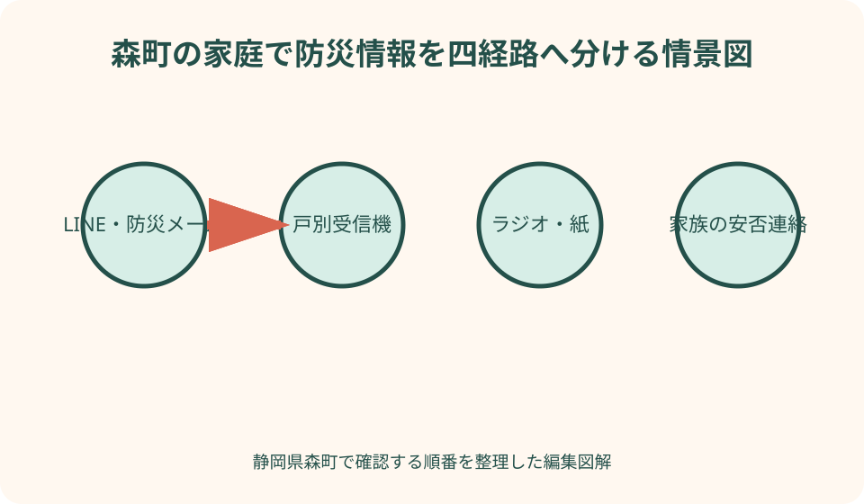
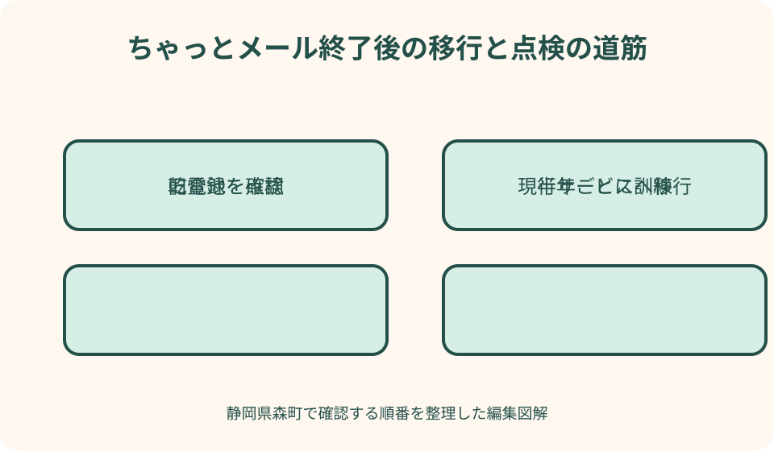

防災・家族の備え｜最終確認 2026-08-10
静岡県森町の防災情報を複数経路で受け取る｜メール・LINE・戸別受信機
防災情報は、登録数を増やせば安心というものではありません。森町の避難情報を受ける経路、気象の危険度を見る経路、停電時にも聞ける経路、家族の安否を伝える経路を分け、実際に届くかを定期的に試す必要があります。

編集イラスト結論：町情報・気象・停電時・家族連絡を別経路にする
一つ目は森町が出す避難情報、避難所開設、火災などを受ける経路です。森町公式LINEまたは森町防災メールを設定し、戸別受信機でも緊急放送を受けられる状態にします。
二つ目は気象庁の警報、キキクル、台風・地震情報を自分で確認する経路です。町から通知が来るまで待つのではなく、危険度の高まりを見て持出準備や自主避難を始めます。
三つ目は停電と通信障害に備える経路です。戸別受信機の乾電池、電池式ラジオ、紙のハザードマップと連絡先を用意し、スマートフォンが使えない場面でも情報を失わないようにします。
四つ目は家族の安否と行動を伝える経路です。通常の電話やメッセージだけでなく、災害用伝言ダイヤル171、web171、遠方連絡先などを決めます。受信と発信を分けて考えることが要点です。
2026年4月以降の森町情報経路を確認する
森町総合配信サービス「森町ちゃっとメール」は2026年3月31日で終了しました。以前の登録が残っているから通知を受けられるとは考えず、公式LINEまたは新しい森町防災メールへ移行します。
森町防災メールは、ちゃっとメール終了に伴い、LINEを利用しない人向けに案内されたサービスです。配信内容は防災情報に限られ、同じ防災内容は森町公式LINEでも配信されます。
森町公式LINEは、防災情報に加えて生活・催しなど幅広い町情報を受けられます。受け取りたい情報の設定で全てを外すと配信されないため、登録後に防災カテゴリが有効かを確認します。
戸別受信機は森町在住世帯へ一世帯1台無償貸与されています。火災・災害等の緊急放送、定時放送、訓練・点検放送を受けます。町外転出時は危機管理課へ返却します。
町の公式防災情報ページには、ハザードマップ、避難情報の備え、気象庁の情報、静岡県の土砂災害情報などへの入口があります。通知を受けた後、詳細を確認する基点としてブックマークします。
森町公式LINEは登録後の受信設定まで確認する
公式LINEを友だち登録したら、公式アカウント名と識別情報が森町公式ページの案内と一致するかを確認します。検索結果や転送されたQRコードだけを信じず、町サイトから登録画面へ進みます。
受信設定を開き、防災情報が選ばれているかを見ます。生活情報や催しの通知が多いからと全カテゴリを外すと、必要な防災情報も届かない状態になり得ます。
スマートフォン本体の通知許可、LINE側の通知、消音、集中モード、電池節約も確認します。アプリ内に届いていても音や画面表示が出ない場合があるため、家族から試験メッセージを送ってもらいます。
偽アカウントや不審なリンクに注意します。防災通知から個人情報、暗証番号、送金を求められた場合は開かず、森町公式サイトと危機管理課へ確認します。

森町防災メールはLINEを使わない家族の主経路にする
森町防災メールは防災情報のみを配信するため、生活情報や催しを受けたい人は公式LINEや町サイトを別に利用します。サービスごとの役割を理解して、メールだけで町の全情報を受けられると思わないようにします。
登録方法は森町公式の最新手順書に従います。空メールの宛先や登録画面を第三者サイトから転記せず、町公式ページから開きます。登録完了画面やメールを確認して初めて完了とします。
迷惑メール、受信拒否、容量不足、アドレス変更で届かなくなる場合があります。登録直後だけでなく、訓練や実際の配信が届いた日を記録し、長期間届かない場合は設定を見直します。
家族の代表一人だけでなく、行動を判断する本人が受け取れる形にします。高齢者がメールを開かない場合は、戸別受信機と電話連絡を組み合わせ、支援者だけへ依存しません。
戸別受信機は設置場所・音量・乾電池を点検する
戸別受信機から音が出ない場合、森町公式は電波状況や故障の可能性を挙げ、設置場所の変更やアンテナを伸ばす方法を案内しています。聞こえにくい部屋では、普段過ごす場所から音を確認します。
放送後にブザーが3回鳴る、電池切れランプが赤く点滅する場合は乾電池を交換します。乾電池は停電時の予備電源になるため、コンセントに接続していても入れておきます。
標準では単2電池2本が装着され、単1・単3も端子部品を組み替えて使えると町は案内しています。自己流で異なる電池を混ぜず、公式の交換図と機器表示に従います。
故障時は現在の受信機を森町役場危機管理課へ持参すると交換案内を受けられます。分解や改造をせず、症状、発生日時、聞こえたブザーを伝えます。
町公式サイトと気象庁を通知後の確認先にする
通知の短文だけでは、対象地区、開設避難所、経路、気象の見通しを読み切れません。森町公式の防災情報ページを開き、発表時刻と対象を確認します。古い保存画面ではなく最新ページを使います。
気象庁のキキクルは、土砂、浸水、洪水の危険度を地図で確認できます。同じ大雨でも災害種類ごとに危険な場所が違うため、自宅と避難経路を重ねて見ます。
町の避難情報と気象庁情報は役割が違います。どちらか片方が届かないから安全と判断せず、町の対象地区、キキクルの色、ハザードマップ、現地状況を合わせます。
公式ページが混み合って開けない場合に備え、気象庁、静岡県、ラジオ、戸別受信機を併用します。スクリーンショットだけを家族へ送る際も、取得時刻とURLを添えます。
ラジオと紙は停電・電池切れ時の予備経路にする
電池式ラジオは、携帯電話回線や家庭の電源が止まったときの情報源になります。周波数、選局、音量、電池方向を平常時に家族全員で試します。
手回し充電機能があっても、短い操作で十分な電力を得られるとは限りません。製品説明を読み、乾電池や充電池も準備します。古い電池を入れたまま液漏れさせないよう点検します。
紙のハザードマップ、避難先、家族連絡先、ラジオ局、戸別受信機の操作を防水袋へ入れます。スマートフォンの充電が切れても住所と避難経路を確認できます。
ラジオの全国ニュースだけでは森町の対象地区や避難所開設を把握できない場合があります。戸別受信機、町の情報を受けた近隣、避難所掲示など地域経路も残します。
家族の安否確認は受信経路と分けて決める
防災メールが届いても、家族の安否は自動で分かりません。通常の電話、メッセージ、171、web171、遠方の連絡担当を分け、どの順で使うか決めます。
全員が互いへ一斉に電話すると回線を使い、情報が食い違います。遠方の親族一人を集約役にし、現地家族は短い定型文で現在地、無事、避難先、次回連絡時刻を送ります。
災害用伝言サービスは平常時に体験利用できる機会を使い、録音・確認の手順を試します。電話番号をキーにするため、どの番号を使うか家族カードへ書きます。
子ども、学校、職場、福祉施設には独自の引渡し・連絡ルールがあります。家族のメッセージだけで迎えへ行かず、施設の公式連絡と道路の安全を確認します。
遠方家族は通知の転送係ではなく確認係になる
町外に住む家族も森町公式LINEや防災メールを利用できる範囲を公式手順で確認し、現地家族と同じ情報を見ます。ただし通知を転送するだけでなく、対象地区と発表時刻を確認します。
現地家族へ繰り返し電話すると避難準備を妨げます。連絡時刻と返信不要の印を決め、「○時の森町発表を確認、返信不要、予定どおり△△へ」のように短く送ります。
遠方家族は交通情報、避難所の町公式情報、気象庁画面など、現地で手が回らない確認を担当できます。一方、現地の道路が通れると断定したり、自宅へ戻るよう指示したりしません。
通信が途切れた場合は、連絡がないことを即座に被災と決めず、決めた次回時刻と171等を確認します。緊急通報は実際の危険や救助の必要がある場合に使います。
通知が届かない場合を半年ごとに訓練する
半年ごとに、公式LINEの通知、防災メール、戸別受信機、ラジオ、紙地図を一つずつ開きます。登録済みという記憶ではなく、現在の端末で利用できるかを確かめます。
機種変更、電話番号・メールアドレス変更、引っ越し、アプリ再インストール、迷惑メール設定で受信状態が変わります。変更日を防災台帳へ入れ、その日のうちに再登録を確認します。
戸別受信機は停電を想定して電源を抜き、乾電池で作動するかを説明書に従って試します。訓練・点検放送を利用し、音量と設置場所を確認します。
家族一人のスマートフォンを電源オフにする想定で、別の人が紙地図とラジオを使えるか試します。失敗した手順を責めず、端末、電池、文字の大きさ、保管場所を直します。

緊急情報と平常情報を見分け、うわさを拡散しない
戸別受信機では定時、チャイム、緊急、訓練、点検の放送があります。音がしただけで災害発生と決めず、放送種別と内容を最後まで聞きます。聞き取れなければ町の公式ページ等で確認します。
SNSで流れる道路崩落や避難所満員の投稿は、時刻と場所が古い場合があります。発信者が公式か、対象が静岡県森町か、投稿時刻はいつかを確認し、未確認情報を家族や地域へ転送しません。
画像や動画は別災害のものが再利用される場合があります。町、警察、消防、道路管理者、気象庁など一次情報へ戻ります。公式情報にないから安全とも断定しません。
緊急通報番号へ情報確認だけの電話を集中させないよう、平常時の相談先と119番・110番を分けます。救助や火災、事件の緊急性がある場合はためらわず通報します。
良い点：一経路の故障を別の経路で補える
複数経路の良い点は、スマートフォンの電池切れを戸別受信機とラジオで、戸別受信機の受信不良をLINE・メールで補えることです。同じ弱点を持つアプリだけを複数入れるより有効です。
森町防災メールと公式LINEの防災内容が同じなら、家族の利用端末に合わせて選べます。LINEを使わない高齢者へ無理に導入させず、メールと戸別受信機を組み合わせられます。
町情報と気象庁情報を分けると、避難所開設と気象危険度を同時に把握できます。どこが危ないかと、町が何を開設したかを混同しません。
家族連絡を定型化すれば、長文を書く時間を減らし、電池と回線を節約できます。遠方家族も公式情報を自分で確認し、現地へ同じ質問を繰り返さずに済みます。
注文したい点：登録しただけでは受信できる保証にならない
注文したい点は、登録完了後も端末設定、迷惑メール、アプリ通知、通信障害、電池切れで届かない場合があることです。最後に届いた日時を記録し、定期点検が必要です。
複数経路でも、全てスマートフォン一台に集めれば故障点は一つです。戸別受信機、電池式ラジオ、紙を加え、電源と通信の弱点を分散します。
町の通知、気象庁、家族の情報が同時に届くと、内容や時刻が違って混乱する場合があります。発信元、対象地区、発表時刻、取る行動の四項目で並べます。
古いガイドブックや家族メモには終了したちゃっとメール情報が残ります。紙だから信頼できるとは限らず、年1回は森町公式ページでサービス継続を確認します。
代案・結論：端末を増やせなくても電源と担当を分ける
スマートフォンを一台しか持たない家庭は、公式LINEまたは防災メールに加え、戸別受信機とラジオを整えます。端末数ではなく、通信と電源が異なる経路を確保します。
メールやLINEの操作が難しい人は、戸別受信機の音量・乾電池を優先し、近隣や家族の電話連絡を決めます。本人が放送を聞いた後の行動カードを受信機の横へ置きます。
遠方家族がいない場合は、近隣の信頼できる人や自主防災組織と、どこまで情報を共有するか相談します。個人情報や支援を当然に求めず、互いの安全を優先します。
結論として、今日行うのは終了したちゃっとメールへの依存がないか確認し、公式LINEまたは防災メールを一つ登録し、戸別受信機の乾電池を点検することです。
家族に残す防災情報経路表
経路表には、森町公式LINE、防災メール、戸別受信機、町公式サイト、気象庁、ラジオ、171、web171を並べ、受ける情報、必要な電源、担当者を書きます。
各経路に登録日、最終受信日、次回点検日、端末、設定場所を記します。パスワードそのものは共有表へ書かず、安全な管理方法を家族で決めます。
行動欄には「高齢者等避難を受けたら誰がどこへ」「キキクル赤なら何をする」のように、通知名と次の行動を一行で結びます。通知を読むだけで終わらせません。
家族連絡文は、日時、現在地、無事か、避難先、次回連絡時刻の五項目にします。返信不要の場合は明記し、現地家族の電池と時間を使い過ぎないようにします。
大石の視点：情報経路も実家管理の設備として残す
大石の視点では、戸別受信機、ラジオ、通信端末は、分電盤や水道と同じく住まいを支える設備です。誰が使い、いつ点検し、転出時に返すかを実家カルテへ残します。
森町の実家を遠方家族が管理する場合、現地の高齢者へ新アプリの操作を押し付けず、聞き慣れた戸別受信機と電話、新しい防災メールを組み合わせます。
空き家に戸別受信機が残っている場合、所有物と決めつけず、町外転出や世帯変更時の返却・扱いを危機管理課へ確認します。電池を入れたまま長期放置しません。
私は、通知を多く集めるより、道路、境界、農地、登記、避難先と同じ台帳に『誰が何を受けて動くか』を残したいと考えます。売却未定でも家族の安全と管理引継ぎに役立ちます。
まとめ：新しい受信先へ移行し、半年ごとに届くか試す
静岡県森町では、2026年3月31日にちゃっとメールが終了しました。現行の森町公式LINEまたは森町防災メールへ移行し、旧登録だけへ依存しません。
戸別受信機は一世帯1台の無償貸与で、停電時のため乾電池を装着します。受信不良は設置場所とアンテナを確認し、故障時は危機管理課へ相談します。
町公式サイト、気象庁、電池式ラジオ、紙地図、171等を加え、町情報、気象、停電時、家族連絡を別経路で確保します。
まず公式LINEまたは防災メールの登録を確認し、戸別受信機を乾電池で試し、家族へ五項目の定型文を送ってください。半年ごとの訓練で初めて、複数経路が実際の備えになります。
公式情報・確認先
掲載内容は次の一次情報を基礎に整理しました。営業、料金、催し、交通は変わるため、出発前または手続き前にリンク先で最新情報を確認してください。
- 森町防災メール（静岡県森町、2026-08-10確認）
- 同報無線戸別受信機について（静岡県森町、2026-08-10確認）
- 同報無線戸別受信機の電池交換について（静岡県森町、2026-08-10確認）
- 防災情報（静岡県森町、2026-08-10確認）
- 森町総合配信サービス 森町ちゃっとメール（令和8年3月で終了）（静岡県森町、2026-08-10確認）